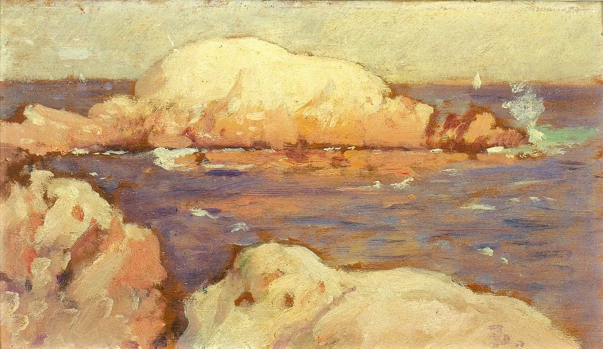

Metcalf, Duveneck e outros
Study of Braces Rock, Gloucester
Frank Duveneck, c. 1893

- Técnica
- Óleo sobre painel
- Coleção
- Cape Ann Museum, Gloucester
- N.º de inventário
- 2504
- Lugar
- Eastern Point
- Registo verificado
- Parcialmente verificado (página do artista no museu)
- Direitos de imagem
- Imagem em domínio público
Fonte · nota 88
Frank Duveneck, Study of Braces Rock, Gloucester, c. 1893, oil on panel, Cape Ann Museum, Gloucester, 2504, accessed November 2026, https://capeannmuseum.quartexcollections.com/resources/artists-in-the-collection-of-the-cape-ann-museuma-partial-list/frank-duveneck-18481919. Partly verified (museum artist page).